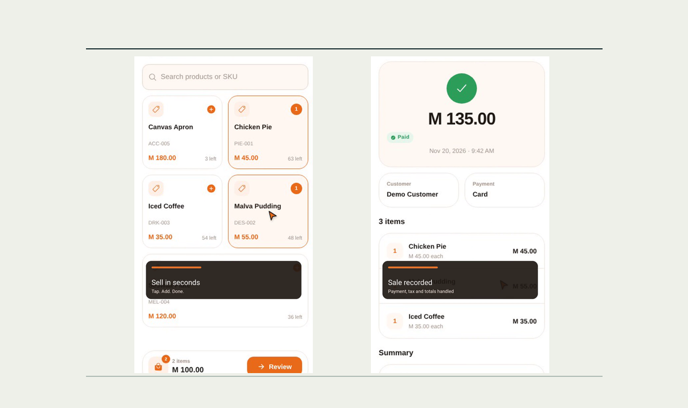
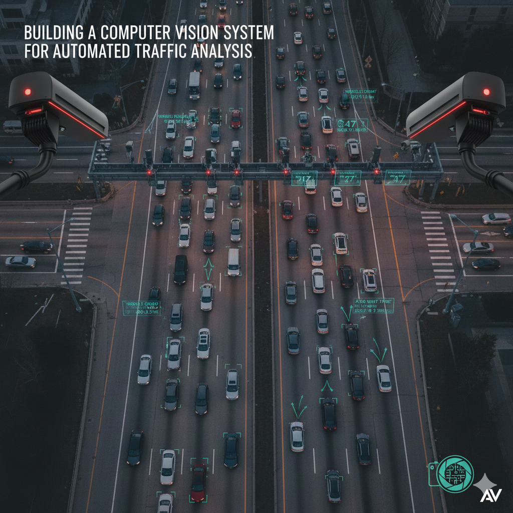
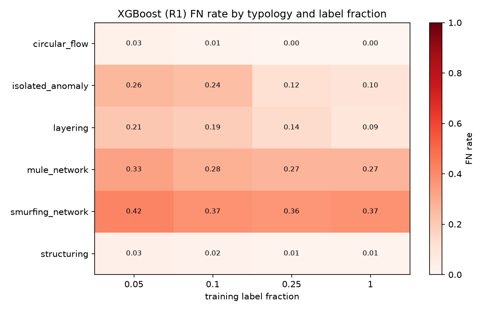

Selected work and writing
Lauren Qokolo
Software engineer building dependable financial systems for low-connectivity environments.
Open to roles and collaborations- Based
- Lesotho, Southern Africa
- Focus
- Fintech, reliability, offline-first tools
- Studying
- BSc (Hons) Software Engineering
Where I've worked
- Web
Mileage Tech
Web developer in Lesotho. Built and maintained responsive applications, turning client needs into fast, reliable interfaces.
- Full stack
Dr Lemoh Gen Trade
Full stack engineering intern in Lesotho. Worked across APIs, databases and React interfaces.
- Backend
Adjoaa LTD
Backend engineering intern in the United Kingdom. Contributed to server-side features with a remote international team.
Things I've built
Khoebo business operations
A mobile-first platform that brings point of sale, stock, bookkeeping and analytics into one place for small businesses.

Computer vision for traffic analysis
Automated vehicle counting with segmentation, detection and tracking that runs locally without cloud dependencies.

Basel III regulatory engine
A Spring Boot calculation engine built for auditability, reproducibility and governance in regulatory reporting.
Real-time AML detection
Transaction monitoring with rules, alerts and regulatory reporting for financial crime detection.

From the writing
Beyond the known pattern
What a synthetic transaction graph revealed about label scarcity and typology shift in financial crime detection.

Browse all posts